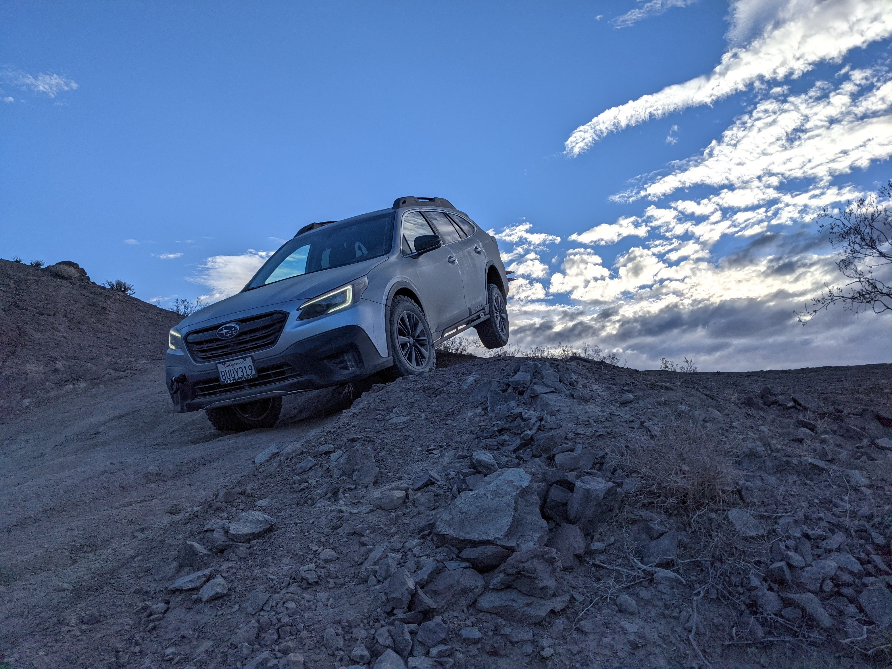

ABOUT
 Welcome to my page! Just started my overlanding trip recently in 2021 with my 2021 Subaru Outback Onyx XT. Driving has always been my favorite since I started back in 2004. It has a unique feeling of freedom as you drive on the road with the car that can take you anywhere. I will never forget the first time I drove my 2006 Toyota Corolla S. But with the Corolla, it can only be driven on asphalt road.The fun begins when you are off the beaten path!
Just starting off with some social media with photos and video. Check them out on instagram and youtube.
Car Mods
- All Terrains KO2 Tires
- LP Adventure Rock Sliders